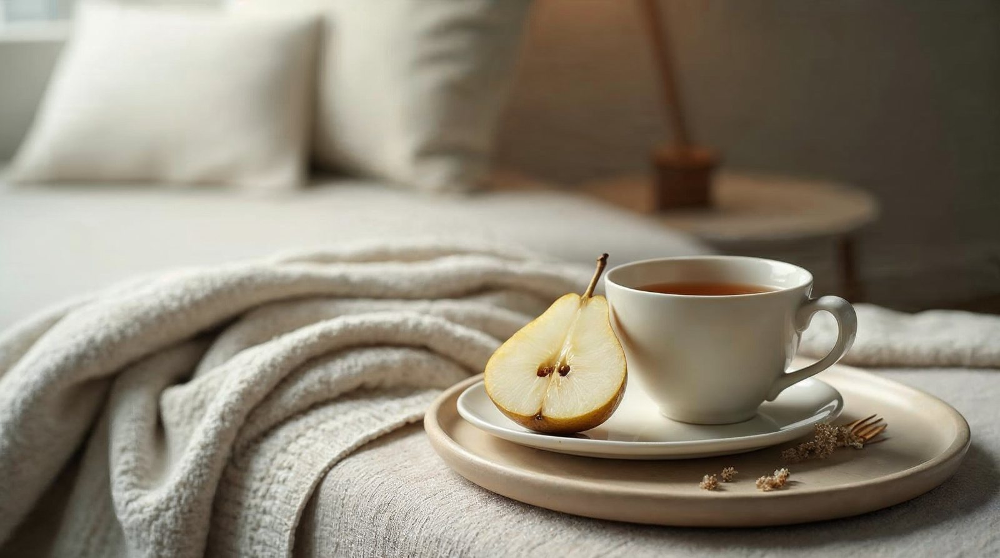
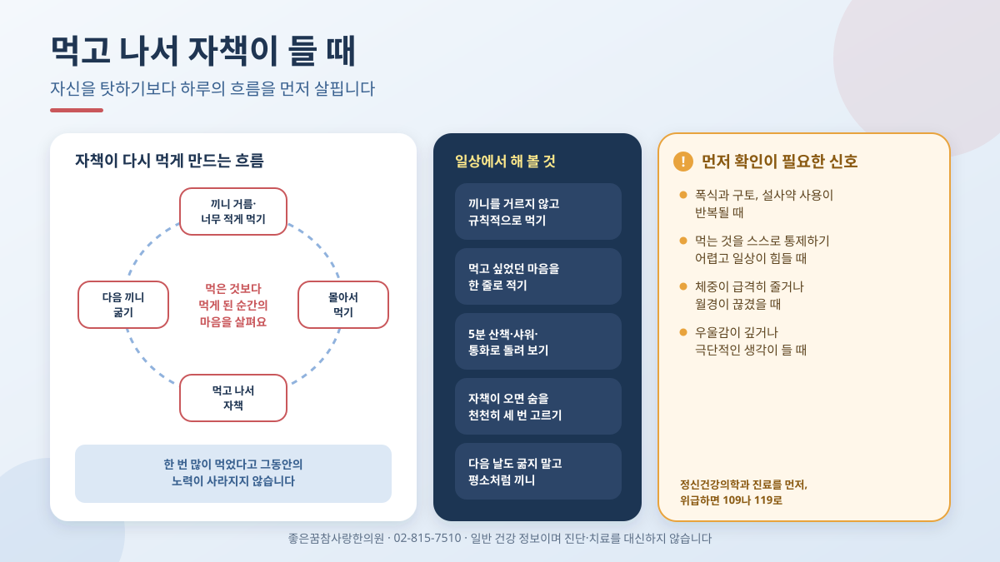

이종호 한의사 감수좋은꿈참사랑한의원 대표원장 (한의사 면허번호 19769)발행 2026-11-22 · 수정 2026-11-26
이 글의 차례
밤 11시, 불 꺼진 부엌에서 냉장고 문을 열고 서서 무언가를 먹다가 문득 정신이 들 때가 있습니다. 빈 과자 봉지를 내려다보며 "내가 또 왜 이랬지" 하고 한숨을 쉬고, 다음 날 아침 거울 앞에서 그 생각이 다시 떠오릅니다. 이런 마음을 혼자 품고 계신 분이 생각보다 많습니다.
먼저 이 말씀부터 드리고 싶습니다. 그렇게 드신 것은 당신이 약해서가 아닙니다. 자책은 체중을 줄여 주지 않고 마음만 무겁게 하며, 오히려 다음 폭식을 부르기도 합니다. 그래서 저는 무엇을 얼마나 드셨는지보다, 드시게 된 그 순간의 마음과 하루의 흐름을 먼저 함께 살피려고 합니다.
"제가 의지가 약해서 그래요"
진료실에서 이런 말씀을 자주 듣습니다. 고개를 조금 숙이고, 목소리를 낮추어서 하시는 말씀입니다. 어떤 분은 말을 꺼내기 전에 한참을 망설이시기도 합니다. 그 망설임 안에 그동안 얼마나 자신을 몰아세우셨는지가 다 들어 있는 것 같아, 저는 그 순간이 늘 조심스럽습니다.
그래서 저는 대답 대신 질문을 하나 드립니다. "그날 점심은 드셨어요?" 많은 분들이 잠시 생각하시다가 대답하십니다. "아니요, 바빠서 걸렀어요." 또는 "다이어트 중이라 샐러드만 조금." 그러면 저는 조용히 말씀드립니다. 그건 의지의 문제라기보다, 하루 종일 비어 있던 몸이 밤이 되어 한꺼번에 채우려 한 것일 수도 있다고요.
왜 먹고 나서 자책이 반복될까요
끼니를 거르거나 너무 적게 드시면 몸은 허기를 오래 참지 못합니다. 낮 동안 잘 버티다가도 저녁이나 밤에 한 번에 몰아 드시게 되는 흐름이 생기기 쉽습니다. 이건 몸이 제 할 일을 하는 것에 가깝습니다.
마음도 함께 움직입니다. 스트레스를 받은 날, 외로운 날, 지루한 날, 너무 피곤한 날에 먹는 것으로 스스로를 달래는 습관은 누구에게나 생길 수 있습니다. 먹는 일은 가장 빠르고 손쉬운 위로이니까요. 저는 그 위로가 필요했던 하루를 먼저 알아드리고 싶습니다.
그리고 '이건 절대 먹으면 안 돼'라는 규칙이 많을수록, 그 규칙이 깨지는 순간의 자책도 커집니다. 한 조각을 먹었으니 이미 망쳤다는 생각이 들면, 그 김에 다 먹어 버리게 되기도 합니다. 그리고 다시 자책합니다.
자책이 다음 폭식을 부르고, 폭식이 다시 자책을 부르는 고리입니다. 여기에 잠이 모자라면 식욕이 커지고 감정을 다스리기도 어려워져서 이 고리가 더 단단해지기 쉽습니다.
먼저 말씀드리고 싶은 것
먹는 것으로 마음을 달래는 날도 있습니다. 그런 날이 있다고 해서 당신이 약한 사람인 것은 아닙니다. 한 번 많이 드셨다고 그동안 애써 온 시간이 사라지지도 않습니다. 저는 이 두 가지를 진료실에서 몇 번이고 반복해서 말씀드립니다. 한 번 듣고는 잘 믿기지 않는 말이라는 걸 알기 때문입니다.
진료실에서 자주 만나는 모습들
어느 한 분의 이야기가 아니라, 진료실에서 비슷하게 자주 듣게 되는 모습들을 모아 보았습니다.
다이어트를 결심하고 하루 한 끼만 드시다가 주말에 몰아 드시고 자책하는 분이 계십니다. 월요일마다 다시 결심하고, 금요일 밤이면 또 무너진다고 하십니다.
저는 이런 분께 먹는 양을 줄이자는 말씀을 드리지 않습니다. 먼저 세 끼를 규칙적으로 드시는 것부터 다시 시작해 보자고 말씀드립니다. 굶지 않아야 몰아 드시는 일이 줄어들 여지가 생깁니다. 양을 조절하는 일은 그다음입니다.
회사에서 힘든 날마다 퇴근길 편의점에 들러 단 것을 사 드신다는 분도 계십니다. 그 단 것이 하루를 버틴 자신에게 주는 상이라는 것을 저도 압니다. 그래서 그 상을 빼앗기보다, 그 시간에 마음을 풀 다른 방법 하나를 같이 찾아봅니다.
한 정거장 먼저 내려 걷기, 좋아하는 사람에게 전화 한 통, 집에 와서 따뜻한 물로 샤워하기 같은 것들입니다. 그래도 단 것을 사 드신 날은, 그냥 그런 날이었다고 적고 넘어가시면 됩니다.
가족 모임이나 명절에 많이 드신 뒤 며칠씩 굶어서 '만회'하려는 분도 자주 뵙습니다. 마음은 이해합니다. 하지만 굶으면 다시 몰아 드시기 쉬워서, 다음 날도 평소처럼 아침을 드시는 편이 낫다고 말씀드립니다. 어제의 한 끼는 어제의 일로 두고, 오늘은 오늘의 끼니를 챙기시면 됩니다.
먼저 이렇게 여쭙니다
처음 뵈면 저는 이런 것들을 여쭙니다.
- 언제, 어떤 마음일 때 드시게 되는지(스트레스 때문인지, 외로워서인지, 지루해서인지, 너무 피곤해서인지)
- 하루 식사가 규칙적인지, 너무 굶다가 몰아 드시지는 않는지
- 드신 뒤에 어떤 생각과 행동이 따라오는지
- 잠은 충분하신지
이 질문들에 맞고 틀린 답은 없습니다. 솔직하게 말씀해 주시는 것만으로 충분합니다. 저는 그 대답을 듣고 판단하려는 것이 아니라, 당신의 하루를 이해하려는 것입니다.
오늘부터 해 볼 수 있는 것
가장 먼저 권하고 싶은 것은 끼니를 거르지 않는 것입니다. 아침에 입맛이 없으시면 바나나 하나, 우유 한 잔이라도 괜찮습니다. 점심과 저녁 사이가 길다면 오후 네 시쯤 작은 간식을 미리 정해 두세요. 배가 너무 고파지기 전에 조금씩 채워 두면 밤의 허기가 덜 거세집니다.
기록을 하신다면 점수를 매기지 말고 사실만 적어 보세요. "무엇을 먹었나"보다 "먹고 싶었던 마음은 무엇이었나"를 한 줄로 적는 겁니다. '저녁 9시, 회의에서 혼나고 집에 와서 라면' 이런 식으로요. '또 실패' 같은 말은 적지 않으셨으면 좋겠습니다. 며칠 모이면 어떤 시간, 어떤 상황에서 먹고 싶은 마음이 커지는지 보이기 시작합니다.
먹고 싶은 마음이 크게 올라올 때는 5분만 다른 일을 해 보세요. 산책, 샤워, 양치질, 누군가와의 통화. 5분이 지나도 여전히 드시고 싶다면 드셔도 괜찮습니다. 이건 참는 연습이 아니라, 지금 내가 배가 고픈 건지 마음이 고픈 건지 잠깐 들여다보는 시간입니다.
좋아하는 음식은 금지 목록에 넣지 마시고, 언제 얼마나 드실지를 미리 정해 두세요. 금지된 음식은 더 크게 보입니다. 토요일 오후에 좋아하는 빵 하나를 접시에 담아 천천히 드시는 것이, 일주일 내내 참다가 밤에 한 봉지를 다 드시는 것보다 마음에도 몸에도 편합니다.
그리고 자책이 밀려올 때는 숨을 천천히 세 번 고르세요. 하루 한 번은 스스로에게 "오늘도 애썼다"고 말해 주셨으면 합니다. 쑥스러우시겠지만, 저는 이 한마디가 생각보다 큰 힘이 된다고 믿습니다.
하나 더 있습니다. 많이 드신 다음 날, 몸을 벌주듯 무리하게 운동하지는 않으셨으면 합니다. 먹은 만큼 태워야 한다는 생각으로 하는 운동은 또 하나의 자책이 되기 쉽습니다. 대신 평소처럼 가볍게 걷고, 평소처럼 세 끼를 드시고, 평소처럼 잠자리에 드세요. '평소처럼'이라는 말이 이 고리를 끊는 데 가장 든든한 말이라고 저는 생각합니다.

몸의 배고픔과 마음의 배고픔
먹고 싶은 마음이 올라올 때, 그게 몸이 보내는 배고픔인지 마음이 보내는 배고픔인지 구분해 보는 연습을 권합니다. 몸의 배고픔은 대개 천천히 찾아옵니다. 마지막 끼니에서 시간이 꽤 흘렀고, 배가 꼬르륵거리고, 밥이든 빵이든 뭐든 먹으면 괜찮아질 것 같습니다. 그리고 적당히 드시면 멈출 수 있습니다.
마음의 배고픔은 갑자기 찾아오는 경우가 많습니다. 방금 밥을 먹었는데도 무언가 당기고, 특정한 음식, 예를 들어 달고 바삭한 것이나 맵고 짠 것이 꼭 먹고 싶어집니다. 배가 불러도 손이 멈추지 않고, 다 먹은 뒤에 허전함이 남습니다.
이 구분은 정답을 맞히자는 게 아닙니다. "아, 지금은 마음이 고픈 거구나" 하고 알아차리는 것만으로도, 자책 대신 내 마음을 돌볼 기회가 생깁니다. 그럴 때는 마음이 무엇을 원하는지 물어봐 주세요. 쉬고 싶은 건지, 누군가와 이야기하고 싶은 건지, 그냥 오늘이 너무 길었던 건지요.
밤 시간을 조금 덜 힘들게 지나는 법
먹고 나서 자책이 드는 순간은 밤에 몰려 있는 경우가 많습니다. 하루의 피로가 가장 크고, 혼자 있는 시간이 길어지고, 내일 걱정이 몰려오는 시간이니까요. 그래서 밤을 위한 작은 순서를 미리 만들어 두시길 권합니다.
저녁은 너무 늦지 않게, 너무 적지 않게 드세요. 저녁을 가볍게 넘기면 밤 열 시쯤 허기가 다시 찾아오기 쉽습니다. 저녁을 드신 뒤에는 양치를 일찍 해 두시는 것도 작은 신호가 됩니다.
부엌 불을 일찍 끄고, 거실 조명을 조금 낮추고, 따뜻한 보리차 한 잔을 곁에 두세요. 휴대폰으로 음식 영상을 보는 시간은 조금 줄여 보시고요. 그리고 가능하면 조금 일찍 잠자리에 드시면 좋겠습니다. 피곤한 채로 깨어 있는 밤이 길수록 마음의 배고픔도 길어지기 쉽습니다.
주변의 말이 마음에 남을 때
"그만 좀 먹어", "살 좀 빼야겠다" 같은 말을 가까운 사람에게서 들으면, 그 말이 먹을 때마다 귓가에 다시 들린다는 분도 계십니다. 걱정에서 나온 말이라는 걸 알아도 마음은 아픕니다.
그런 말이 계속 마음에 남는다면, 식구들에게 "나는 지금 스스로 조절해 보는 중이니 지켜봐 줬으면 좋겠다"고 한 번쯤 말씀해 보셔도 좋겠습니다.
그 말을 꺼내기 어렵다면 진료실에서 먼저 저에게 털어놓으셔도 됩니다. 당신을 다그치는 목소리가 이미 충분히 많다면, 적어도 진료실에서만큼은 그 목소리를 하나 줄여 드리고 싶습니다.
한의원에서 함께 살필 수 있는 경우
이런 분들과는 함께 이야기해 볼 것이 많습니다.
- 식사 시간이 불규칙해 몰아 드시는 일이 반복되는 분
- 스트레스를 받으면 속이 답답하고 먹는 양이 늘어나는 분
- 밤잠이 얕고 다음 날 식욕이 들쭉날쭉한 분
식사 리듬과 식욕의 흐름, 긴장과 소화, 잠과 식욕이 어떻게 이어지는지를 같이 살핍니다.
처음 오시면 이렇게 진료합니다
좋은꿈참사랑한의원에 처음 오시면, 저는 드신 양보다 하루의 흐름과 그때의 마음을 먼저 차분히 듣습니다. 서두르지 않으셔도 됩니다. 그다음 양손을 올려 달라고 말씀드리고 두 손목의 맥을 차례로 짚습니다.
맥을 보는 동안에는 잠은 잘 드시는지, 자다가 깨시는지, 식사 뒤 속이 답답하거나 더부룩하지는 않은지, 손발이 찬 편인지 몸에 열이 오르는 편인지 여쭙니다. 필요하다고 판단되면 혀와 배를 살펴 소화와 긴장 상태를 봅니다.
체중 관리가 함께 필요하시면 인바디 770으로 체성분을 기록해 두기도 하지만, 저는 숫자보다 생활 목표가 얼마나 지켜졌는지를 다음 진료 때 더 궁금해합니다.
식사 리듬을 되찾는 계획과 함께 침이나 한약 상담을 상태에 맞춰 정하고, 마음의 어려움이 크다고 판단되면 정신건강의학과 진료를 함께 안내합니다. 다시 오시면 지난번 이야기부터 이어서 여쭙습니다. 지키지 못한 날이 있었다면, 그날 무슨 일이 있었는지부터 듣겠습니다.
얼마나 지켜보고, 언제 다른 진료가 필요할까요
끼니를 규칙적으로 챙기기 시작한 뒤 2~3주는 체중계 숫자보다 몰아 드시는 횟수가 줄었는지를 먼저 보세요. 체중은 하루 이틀 사이에도 물과 식사 시간에 따라 오르내립니다. 숫자 때문에 마음이 크게 흔들리신다면 일주일에 한두 번만 같은 조건에서 재셔도 충분합니다.
자책이 일주일 넘게 하루 대부분을 차지하거나 일상이 힘들 정도라면 정신건강의학과 상담을 먼저 받으시길 권합니다. 폭식 뒤 구토를 하거나 설사약을 쓰는 일이 반복되기 시작했다면 기다리지 마시고 정신건강의학과 진료를 받으세요. 도움을 청하는 것은 부끄러운 일이 아닙니다.
이렇게 기록해 오시면 상담이 쉬워집니다
많이 드신 날의 시간과 상황, 그때의 기분, 그날 끼니를 거른 적이 있는지, 잠든 시각과 수면 시간, 복용 중인 약 정도면 충분합니다. 마음이 편했던 날의 식사 시간과 그날 있었던 일도 함께 적어 오시면 좋겠습니다. 잘 안 된 날만큼, 괜찮았던 날에도 실마리가 있습니다.
이런 증상은 먼저 확인이 필요합니다
- 폭식과 구토, 설사약 사용이 반복되는 경우
- 먹는 것을 스스로 조절하기 어렵고 일상이 힘든 경우
- 체중이 급격히 줄거나 월경이 끊긴 경우
- 구토를 되풀이한 뒤 쓰러질 듯 어지럽거나, 가슴이 두근거리고 기운이 심하게 빠지는 경우
- 우울감이 깊거나 스스로를 해칠 생각이 드는 경우
이런 경우에는 정신건강의학과 진료를 먼저 권합니다. 구토 뒤 쓰러질 듯 어지럽거나 가슴이 심하게 두근거리면 한의원 진료를 기다리지 말고 가까운 응급실을 이용하세요.
스스로를 해칠 생각이 드신다면 혼자 견디지 마시고 ☎ 109에 바로 도움을 청하세요. 복용 중인 약은 처방한 의사와 상의 없이 줄이거나 끊지 않습니다.
먹고 나서 자책이 드는 밤이 또 오더라도, 그 밤이 당신의 전부는 아닙니다. 다음 날 아침 따뜻한 밥 한 끼를 챙겨 드시는 것, 거기서 다시 시작하시면 됩니다. 저는 진료실에서 그 다음 이야기를 함께 듣고 싶습니다.
함께 읽으면 좋은 글
- 야식을 끊기 어려울 때는 어떤 점을 먼저 살펴보나요?
- 폭식 충동이 올 때는 어떤 점을 먼저 살펴보나요?
- 체중이 더 이상 줄지 않는 정체기에는 무엇을 먼저 점검하나요?

여쭙는 것
- 언제, 어떤 마음일 때 드시게 되는지(스트레스 때문인지, 외로워서인지, 지루해서인지…
- 하루 식사가 규칙적인지, 너무 굶다가 몰아 드시지는 않는지
- 드신 뒤에 어떤 생각과 행동이 따라오는지
한의원에서 함께 살필 것
- 식사 시간이 불규칙해 몰아 드시는 일이 반복되는 분
- 스트레스를 받으면 속이 답답하고 먹는 양이 늘어나는 분
- 밤잠이 얕고 다음 날 식욕이 들쭉날쭉한 분
먼저 확인이 필요한 신호
- 폭식과 구토, 설사약 사용이 반복되는 경우
- 먹는 것을 스스로 조절하기 어렵고 일상이 힘든 경우
- 체중이 급격히 줄거나 월경이 끊긴 경우
한눈에 보는 표
| 구분 | 핵심 |
|---|---|
| 여쭙는 것 | 언제, 어떤 마음일 때 드시게 되는지(스트레스 때문인지, 외로워서인지, 지루해서인지, 너무 피곤해서인지) 하루 식사가 규칙적인지, 너무 굶다가 몰아 드시지는 않는지 |
| 한의원에서 함께 살필 것 | 식사 시간이 불규칙해 몰아 드시는 일이 반복되는 분 스트레스를 받으면 속이 답답하고 먹는 양이 늘어나는 분 |
| 먼저 확인이 필요한 신호 | 폭식과 구토, 설사약 사용이 반복되는 경우 먹는 것을 스스로 조절하기 어렵고 일상이 힘든 경우 |
자주 묻는 질문
자책하는 마음도 한의원에서 상담하나요?
네, 식사와 잠, 스트레스를 함께 여쭙고 생활 전체의 리듬 속에서 살핍니다. 폭식과 구토가 반복되거나 마음의 어려움이 크면 정신건강의학과 진료를 함께 권합니다.
다이어트를 하면 더 심해지나요?
너무 무리한 절식은 몰아 먹기를 부를 수 있어 권하지 않습니다. 세 끼를 규칙적으로 드시는 것부터 다시 시작하는 편이 마음에도 몸에도 편합니다.
많이 먹은 다음 날은 굶어야 하나요?
굶으면 다시 몰아 먹기 쉬워 다음 날도 평소처럼 끼니를 챙기시는 것이 좋습니다. 어제의 한 끼는 어제의 일로 두셔도 괜찮습니다.
체중은 매일 재는 게 좋을까요?
숫자 때문에 마음이 크게 흔들린다면 일주일에 한두 번, 같은 조건에서 재는 편이 마음이 편합니다. 체성분은 진료 계획에 맞춰 인바디로 비교합니다.
먹은 것을 기록하면 오히려 더 신경 쓰이지 않을까요?
그럴 수 있습니다. 그래서 칼로리나 점수 대신 시간과 상황, 그때의 마음만 한 줄로 적어 보시길 권합니다. 기록이 부담스러우면 잠시 쉬셔도 괜찮습니다.
좋은꿈참사랑한의원은 재진 때 지난번 이야기부터 이어서 여쭙니다. 진료시간과 예약은 오시는 길에서 확인하세요.
어디서 상담받을 수 있나요?
좋은꿈참사랑한의원은 서울 동작구 만양로2길 2 신성빌딩 3층·5층(서울 동작구 상도동, 7호선 상도역 3번 출구 근처)에 있습니다. 한의사 3명(이종호 대표원장, 조영기 수석진료원장, 정원영 진료원장)이 진료합니다. 진료시간은 평일 09:30~20:00(점심 13:00~14:00), 토·일·공휴일 09:30~15:00이며, 방문 전 전화로 확인을 권합니다. 예약은 네이버 예약, 카카오톡 상담, 전화 02-815-7510로 받습니다.
이 글은 일반적인 건강 정보이며 개인의 진단이나 치료를 대신하지 않습니다. 증상이 있거나 복용 중인 약이 있다면 진료를 통해 확인하세요. 치료 효과는 개인마다 다를 수 있습니다.
작성 기준: 일반적으로 알려져 있는 건강 정보를 참고해 정리했습니다(대표원장 감수). 증상 기록은 1~2주 동안 하루 1회, 비슷한 시간에 적어 오시면 지난 상태와 비교하기 쉽습니다.